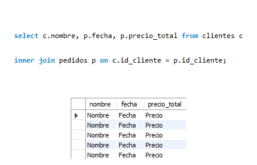
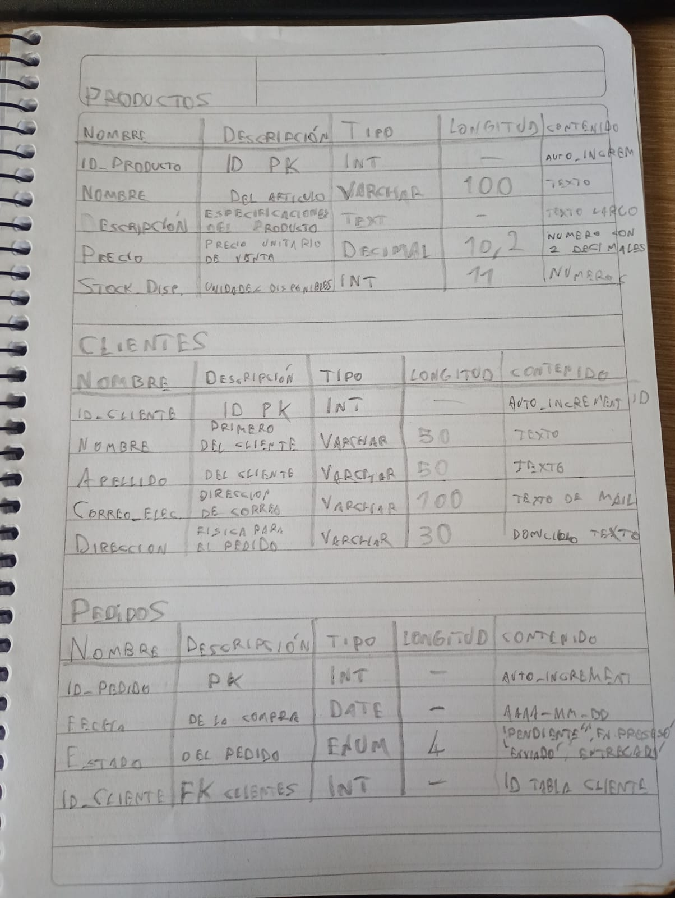

El lenguaje de consulta estructurada (SQL) es un lenguaje de programación para almacenar y procesar información en una base de datos relacional. Una base de datos relacional almacena información en forma de tabla, con filas y columnas que representan diferentes atributos de datos y las diversas relaciones entre los valores de datos. Puede usar las instrucciones SQL para almacenar, actualizar, eliminar, buscar y recuperar información de la base de datos. También puede usar SQL para mantener y optimizar el rendimiento de la base de datos.
Lo que hace un join es básicamente unir datos de dos tablas usando una columna en común que generalmente es la primary key.
Devuelve solo las filas que coinciden en ambas tablas.
Devuelve todas las filas de la tabla izquierda + las que coinciden de la otra tabla.
Devuelve todas las filas de la tabla derecha + las que coinciden de la otra tabla.

El modelo entidad relación (ERD o modelos ER) es una herramienta que permite representar de manera simplificada cómo personas, objetos o conceptos se relacionan entre sí. Se utiliza para exponer cómo se organiza la información en una base de datos.
La creación del modelo entidad relación para su aplicación en el diseño de bases de datos se le atribuye a Peter Chen, profesor del MIT, quien publicó en 1976 el documento “Modelo entidad-relación: hacia una visión unificada de los datos”.
El modelo entidad relación incluye tres elementos básicos:
Son las personas, objetos o conceptos de los que trata una base de datos. Por ejemplo, en una base de datos de ventas de un negocio, las entidades podrían ser, entre otras, “Cliente”, “Producto”, “Factura” o “Dirección”.
Describen las propiedades que posee cada entidad. En el ejemplo anterior, atributos de la entidad “Cliente” podrían ser “Nombre”, “Primer Apellido”, “Fecha de nacimiento”, etc.
Sirven para crear vínculos entre parejas de entidades. Siguiendo con el ejemplo, cada “Cliente” está vinculado a una “Dirección”, a uno o varios “Productos”, etc.
COUNT(): Cuenta el número de filas o de valores no nulos en una columna.
SUM(): Suma todos los valores numéricos de una columna.
AVG(): Calcula el promedio o media aritmética de los valores numéricos.
MIN(): Devuelve el valor menor o mínimo de una columna.
MAX(): Devuelve el valor mayor o máximo de una columna.

El diccionario de datos es un recurso centralizado que define y describe la estructura, el contenido y el significado de los datos de un sistema o base de datos. Actúa como una guía de referencia que documenta metadatos clave sobre conjuntos de datos, como nombres de campos, tipos de datos, valores permitidos y relaciones entre elementos. El objetivo principal de un diccionario de datos es garantizar la coherencia y la claridad en la forma de interpretar, compartir y utilizar los datos en los distintos equipos.
A medida que las organizaciones crecen y adoptan arquitecturas de datos más complejas, un diccionario de datos se convierte en una herramienta esencial para reducir la confusión, mejorar la comunicación y respaldar los esfuerzos de calidad de los datos. Juntas, estas herramientas favorecen la coherencia, la transparencia y la colaboración eficaz entre los equipos de datos y de negocio.
Para una tabla ser la primera forma normal, debe cumplir el siguiente criterio:
- una sola celda no debe contener más de un valor (atomicidad)
- debe haber una clave primaria para identificación
- no filas o columnas duplicadas
- cada columna debe tener solamente un valor por cada fila en la tabla
El 1NF solamente elimina los grupos repetitivos, no la redundancia. Por eso hay 2NF.
Una tabla se dice que está en 2NF si cumple el siguiente criterio:
- ya está en 1NF
- no tiene dependencia parcial. Es decir, todos los atributos no claves son totalmente dependientes de la clave primaria
Cuando una tabla está en 2NF, elimina los grupos repetitivos y la redundancia, pero no elimina la dependencia parcial transitiva.
Esto significa que un atributo no principal (un atributo que no forma parte de la clave del candidato) es dependiente de otro atributo no principal. Esto es lo que la tercera forma normal (3NF) elimina.
Así que, para que una tabla esté en 3NF, debe:
- estar en 2NF
- no tiene dependencia parcial transitiva